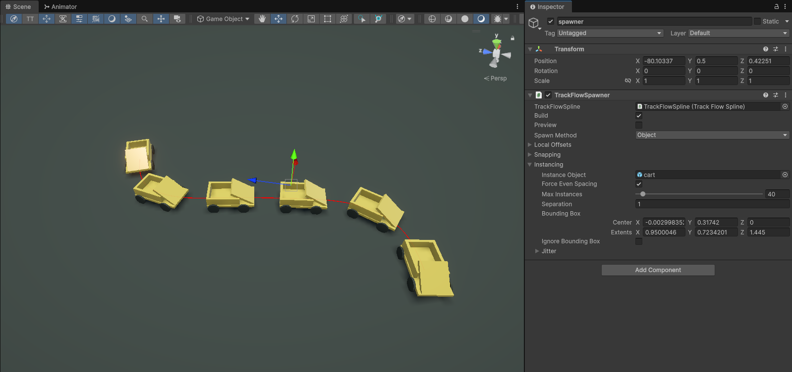
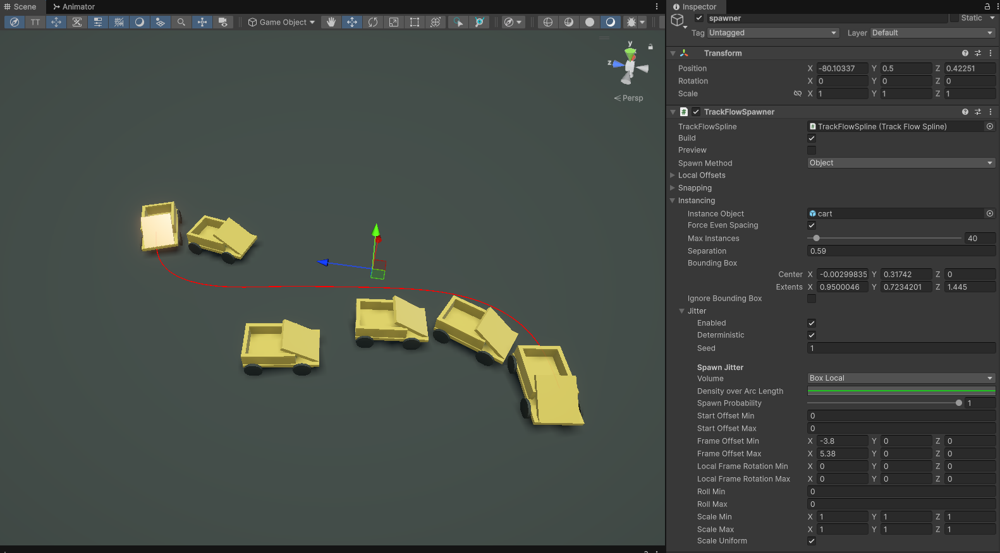
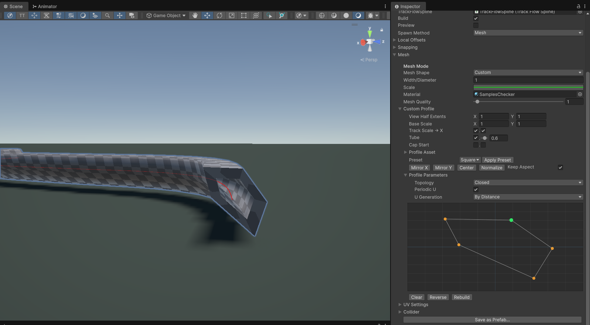

- Generated by
 1.16.1
1.16.1
|
TrackFlow Pro Documentation 1
Generate roller coasters, railroads, conveyors and more with a physics aware spline and meshing system.
|
The spawner component serves two main functions: instantiating objects along the curve, and generating meshes along the curve. It can only do one of these at a time and which one it does is controlled by the Spawn Method property: Object or Mesh. There is also global Local Offsets menu which affects anything generated by the spawner component, and a Snapping snapping menu, which will be covered further down. Let's look at both of the Spawn Method options with simple examples.
In object mode you can set the spawned object prefab within the settings submenu Instancing > Instance Object. Upon dropping a game object into the property field, the spawner component will attempt to calculate the bounding box of the object using its mesh renderer and any colliders. It will use this for its initial spacing by default, and you can see the bounding box in the inspector as well. There is also the Separation property, which adds an additional separation between the instanced objects, in meters.

Now open the Jitter menu to add randomization options. To spawn objects randomly around the curve, change the Volume to Box Local and play with the frame offset min and max properties.

In mesh mode you can extrude a 2D profile as a mesh along the spline, as well as generate UVs and colliders if you choose. The underlying library implements an ITrackMeshBuilder interface for the default 2D extrusion profiles, which takes an array of Vector2 that form a closed loop. This is the profile that gets extruded. There are a few default shapes which are self explanatory, Road, Pipe, UTrack and Custom are included by default. The UTrack is shaped like the road, but with a small curb-like bump on either side. In this tutorial we will focus on the Custom option.
Set a material for your mesh and select the Custom option from the Mesh > Mesh Shape dropdown, then expand the Custom Profile submenu. From here you can select a custom preset shape from the Preset dropdown, or draw within the profile window by Shift + Left Click to add a point, or Right Click to delete one.

You can save your shape as a preset and load it up whenever you want.
The Local Offset property is a global per-sample offset of the sampled Polyline object, in the direction of the frame at that point. So the X offset is along the normal of the curve, the Y along the binormal and the Z along the tangent.
The snapping tool will take the sampled Polyline and attempt to snap it sample by sample to any colliders not ignored by the layer mask. The spawner will attempt to smooth the frame out along the path once complete, you can control by how much within the Snapping > Snap Smoothing submenu.
Note: the snapping tool has some drawbacks associated with noisy data since it snaps on a per-sample basis. If you want to snap to a flat surface it is much preferred to manually align them, or use the Knot Placement Tool in the toolbar, which automatically snaps to collider surfaces for easy authoring.